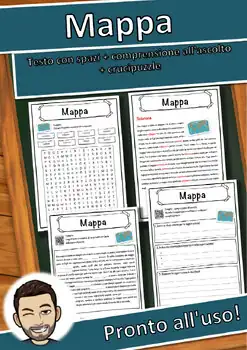
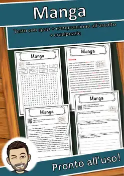
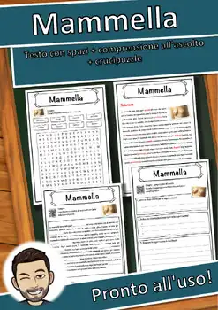
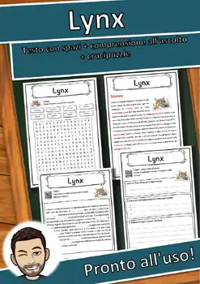
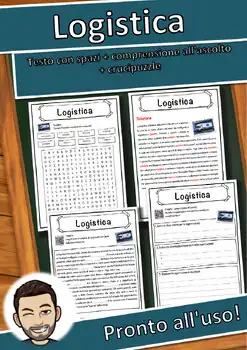
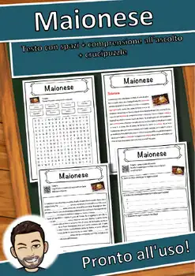
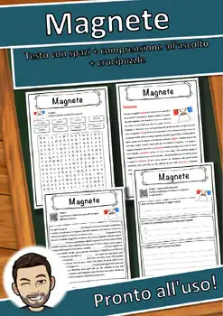
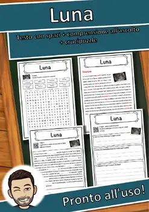
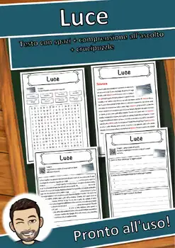

9th Grade Worksheets
1483 printable 9th Grade worksheets (PDF) with answer keys: reading comprehension passages, reading trails and math centers – no prep, print and go.
1,483 resources
Subject
By subject: Geography · Animals & Nature · Science & Health · History & Society · Holidays & Traditions · Music · Art & Culture · Sports · Technology · General Knowledge · Reading Comprehension Worksheets

World War I Reading Comprehension Passages | History Scavenger Hunt 8-9

Oil Refinery Reading Comprehension Passages | Chemistry Scavenger Hunt 8-9

Journey Through the Sun Reading Comprehension | Science Scavenger Hunt 8-9

Natale e inverno – Italian Reading BUNDLE | Christmas & Winter Schede

Art After 1945 BUNDLE | Art History Fact Sheets with Answer Keys

Modern Art Movements BUNDLE | Art History Fact Sheets with Answer Keys

19th-Century Art Movements BUNDLE | Art History Fact Sheets with Answer Keys

Romanesque to Biedermeier Art BUNDLE | Art History Fact Sheets with Answer Keys

Histoire de France – French Reading BUNDLE | Gaul to Versailles Fiches

Gli animali – Italian Reading Comprehension BUNDLE | Animal Schede

Antica Roma – Italian Reading Comprehension BUNDLE | Ancient Rome Schede

Les animaux – French Reading Comprehension BUNDLE | Animal Fiches

L'espace – French Reading Comprehension BUNDLE | Space & Astronomy Fiches

La francophonie – French Reading BUNDLE | French-Speaking World Fiches

Lo spazio – Italian Reading Comprehension BUNDLE | Space Schede

Corpo umano e salute – Italian Reading BUNDLE | Human Body Schede

Le corps humain – French Reading BUNDLE | Human Body & Health Fiches

Noël et l'hiver – French Reading BUNDLE | Christmas & Winter Fiches

Mappa – Italian Reading Comprehension Worksheet (Scheda): Cloze & Listening

Maometto – Italian Reading Comprehension Worksheet (Scheda): Cloze & Listening

Mantica – Italian Reading Comprehension Worksheet (Scheda): Cloze & Listening
Mano – Italian Reading Comprehension Worksheet (Scheda): Cloze & Listening

Manila – Italian Reading Comprehension Worksheet (Scheda): Cloze & Listening

Manganese – Italian Reading Comprehension Worksheet (Scheda): Cloze & Listening

Manga – Italian Reading Comprehension Worksheet (Scheda): Cloze & Listening

Manchester – Italian Reading Comprehension Worksheet (Scheda): Cloze & Listening

Mammut – Italian Reading Comprehension Worksheet (Scheda): Cloze & Listening

Mammella – Italian Reading Comprehension Worksheet (Scheda): Cloze & Listening

Malta – Italian Reading Comprehension Worksheet (Scheda): Cloze & Listening

Mali – Italian Reading Comprehension Worksheet (Scheda): Cloze & Listening

Madrid – Italian Reading Comprehension Worksheet (Scheda): Cloze & Listening

Lynx – Italian Reading Comprehension Worksheet (Scheda): Cloze & Listening

Logistica – Italian Reading Comprehension Worksheet (Scheda): Cloze & Listening

Maldive – Italian Reading Comprehension Worksheet (Scheda): Cloze & Listening

Malaysia – Italian Reading Comprehension Worksheet (Scheda): Cloze & Listening

Malawi – Italian Reading Comprehension Worksheet (Scheda): Cloze & Listening

Malaria – Italian Reading Comprehension Worksheet (Scheda): Cloze & Listening

Maiorca – Italian Reading Comprehension Worksheet (Scheda): Cloze & Listening

Maionese – Italian Reading Comprehension Worksheet (Scheda): Cloze & Listening

Magnete – Italian Reading Comprehension Worksheet (Scheda): Cloze & Listening

Magi – Italian Reading Comprehension Worksheet (Scheda): Cloze & Listening

Luna – Italian Reading Comprehension Worksheet (Scheda): Cloze & Listening

Lugano – Italian Reading Comprehension Worksheet (Scheda): Cloze & Listening

Lucerna – Italian Reading Comprehension Worksheet (Scheda): Cloze & Listening

Luce – Italian Reading Comprehension Worksheet (Scheda): Cloze & Listening

Lubiana – Italian Reading Comprehension Worksheet (Scheda): Cloze & Listening

Losanna – Italian Reading Comprehension Worksheet (Scheda): Cloze & Listening

Londra – Italian Reading Comprehension Worksheet (Scheda): Cloze & Listening
No resources found – try a different search term or filter.